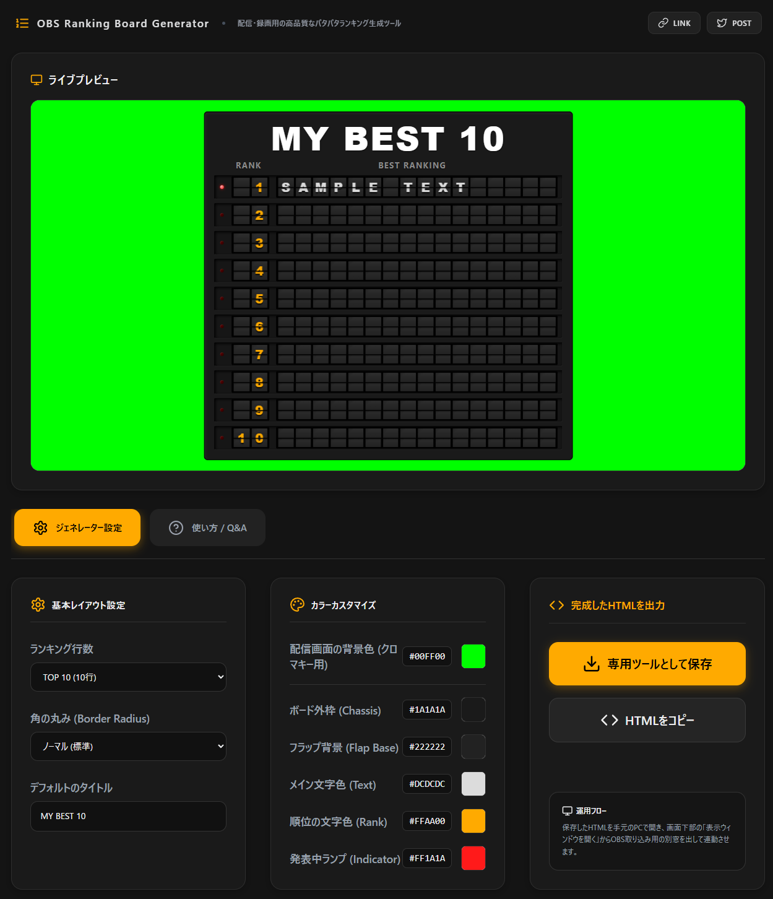
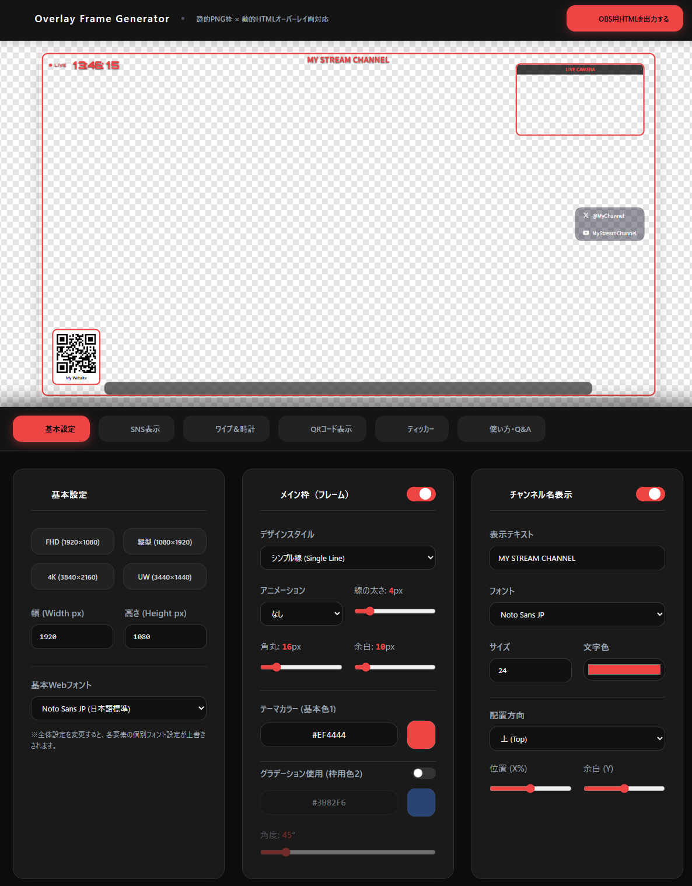

HTML Clock Generator
OBS向けに最適化された透過時計HTMLをローカルだけで生成できるツール。 固定幅・左上寄せ・ローカルフォントZIP化・影やバッジなど配信特化の機能を完備。 HTMLを保存してOBSのブラウザソースに読み込むだけで高品質な時計を使える。
OBS向けに最適化された透過時計HTMLをローカルだけで生成できるツール。 固定幅・左上寄せ・ローカルフォントZIP化・影やバッジなど配信特化の機能を完備。 HTMLを保存してOBSのブラウザソースに読み込むだけで高品質な時計を使える。

OBSで使える“パタパタ式ランキング発表”を、HTML1枚で動かせるリモコン分離型ツール。 ウィンドウキャプチャ＋クロマキーで透過合成し、回転速度や効果音など細かくカスタム可能。 設定はJSON保存でき、配信事故防止のためウィンドウを閉じる前に必ずOBS側を非表示にする。

OverlayGenは、配信に必要な枠・時計・SNS・テロップ・QRなどを“全部ひとつのHTML”に統合できるブラウザ完結型オーバーレイ生成ツール。 直感UIでリアルタイムプレビューしながらデザインでき、静止画だけでなく動くテロップや自動切替QRも標準搭載。 出力したHTMLをOBSのブラウザソースに読み込むだけで高品質なオーバーレイが完成し、ソース管理が劇的にシンプルになる。

NEURA Timerは、OBS上での誤クリック事故を“構造的に防ぐ”ために、操作画面と表示画面をローカルサーバーで分離したタイマー生成ツール。 ブラウザでデザインしてZIPを展開し、Node.js同期でStart/Stop/Resetを安全に連動でき、デザインも高機能で崩れない。 OBS側はローカルファイルを使わずURL指定し、カスタムCSS削除で透過を確保するのが最重要ポイント。

ブラウザに画像をドロップするだけで高品質なサムネを即生成できる完全ローカル処理ツール。 YouTube・SNS・ブログ向けの各種プリセットに合わせて、比率ロックのトリミングとテキスト合成が直感的に行える。 最終出力は2MB以下に自動最適化され、即ダウンロードまで一気に完了する。